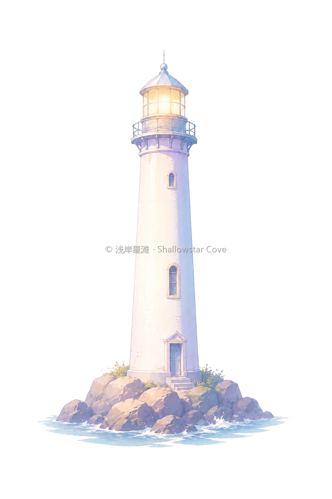
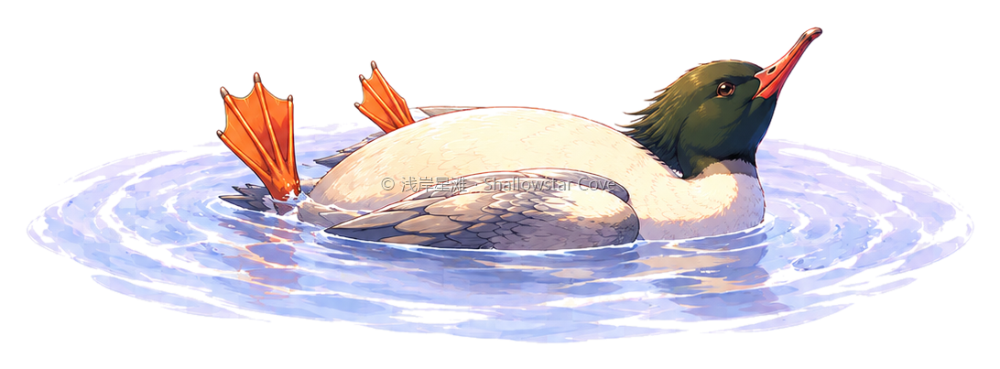

Shallowstar Cove星滩漫步
返回浅岸星滩主页
SHALLOWSTAR SHORE WALK
星滩漫步
沿岸小事 · Shallowstar Shore Walk
今天不急着抵达哪里。沿着浅岸慢慢走一会儿，看海、拾贝、钓起星星碎片，也把一句没说出口的话交给潮汐。

拾贝
每一枚贝壳都像一小段被潮水留下来的心事。
钓鱼
把鱼线抛向海面，也许能钓起一粒掉进水里的星星。
漂流瓶
有些话不必马上说给谁听，先交给海风也可以。
海星浅滩
温柔不是占有，是知道它应该回到哪里。
潮汐图鉴
把今天在岸边遇见的小事，慢慢收进一本发光的册子。
SHALLOWSTAR COVE · MINI WALK
星滩漫步
沿岸小事 · Shallowstar Shore Walk
沿着浅岸走一会儿吧。看海、拾贝、钓起星星碎片，把一句没说出口的话装进漂流瓶。